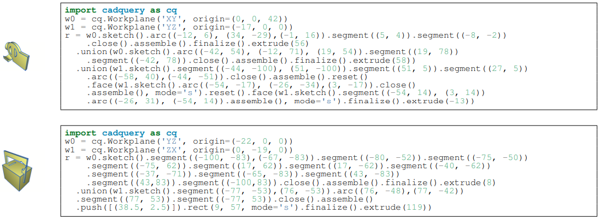

TL;DR
CAD-Recode is the first model to translate 3D point clouds into executable Python CAD scripts, combining a novel output format (CadQuery code), a lightweight Qwen2-1.5B-based architecture with a single-layer point cloud encoder, and a procedurally generated dataset of 1 million CAD programs - setting a new standard in interpretable 3D reverse engineering.
CAD Representation as Code
Unlike DeepCAD's closed and limited token vocabulary, CAD-Recode leverages the full expressiveness of Python with the CadQuery library, enabling rich, interpretable, and modular representations of CAD programs that mirror real-world design logic and support human editing, inspection, and reuse.
Procedurally Generated Dataset
To train CAD-Recode, we introduce a dataset of 1 million procedurally generated Python CadQuery programs, featuring both low-level sketch primitives—like lines, circles, and arcs—and higher-level geometric abstractions such as rectangles, boxes, and cylinders.

Results
While previous methods often fail to restore the general shape, CAD-Recode outputs only slightly deviate from ground truth in most cases.
Trained solely on a procedurally generated dataset, CAD-Recode significantly outperforms prior methods on DeepCAD and Fusion360 benchmarks, achieving 10× lower Chamfer Distance and over 20% higher IoU.
| Method | Train Dataset | DeepCAD Test Set | Fusion360 Test Set | |||||||
|---|---|---|---|---|---|---|---|---|---|---|
| Name | Size | Mean CD↓ | Med. CD↓ | IoU↑ | IR↓ | Mean CD↓ | Med. CD↓ | IoU↑ | IR↓ | |
| DeepCAD | DeepCAD | 160k | 42.5 | 9.64 | 46.7 | 7.1 | 330 | 89.2 | 39.9 | 25.2 |
| PrismCAD | DeepCAD | 127k | – | 4.28 | 72.1 | 16.2 | – | 4.75 | 65.3 | 18.0 |
| Point2Cyl | DeepCAD | 35k | – | 4.27 | 73.8 | 3.9 | – | 4.18 | 67.5 | 3.2 |
| HNC-CAD | DeepCAD | 125k | – | 8.64 | 65.3 | 5.6 | – | 36.8 | 63.5 | 7.3 |
| MultiCAD | DeepCAD | 160k | – | 8.09 | – | 11.5 | – | 42.2 | – | 16.5 |
| TransCAD | DeepCAD | 140k | 32.3 | 4.51 | 65.5 | 1.1 | 78.6 | 33.4 | 60.2 | 2.4 |
| CAD-Diffuser | DeepCAD | 160k | – | 3.02 | 74.3 | 1.5 | – | 3.62 | 63.3 | 1.7 |
| CAD-SIGNet | DeepCAD | 160k | 3.43 | 0.28 | 77.6 | 0.9 | 7.37 | 4.08 | 70.4 | 1.1 |
| CAD-Recode | DeepCAD | 160k | 0.89 | 0.20 | 86.2 | 0.0 | 1.77 | 0.30 | 75.6 | 0.0 |
| CAD-Recode | Ours | 1M | 0.30 | 0.16 | 92.0 | 0.4 | 0.35 | 0.15 | 87.8 | 0.5 |
Given the code output from CAD-Recode and a generic prompt, GPT-4o allows automated and interactive editing of the CAD model or CAD question answering on SGP-Bench.
BibTeX
@article{rukhovich2025cad-recode,
author = {Danila Rukhovich, Elona Dupont, Dimitrios Mallis, Kseniya Cherenkova, Anis Kacem, Djamila Aouada},
title = {CAD-Recode: Reverse Engineering CAD Code from Point Clouds},
journal = {ICCV},
year = {2025},
}